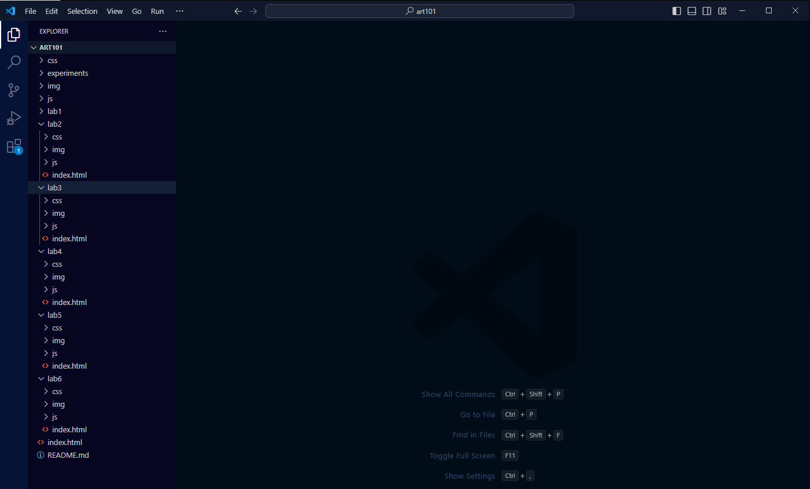
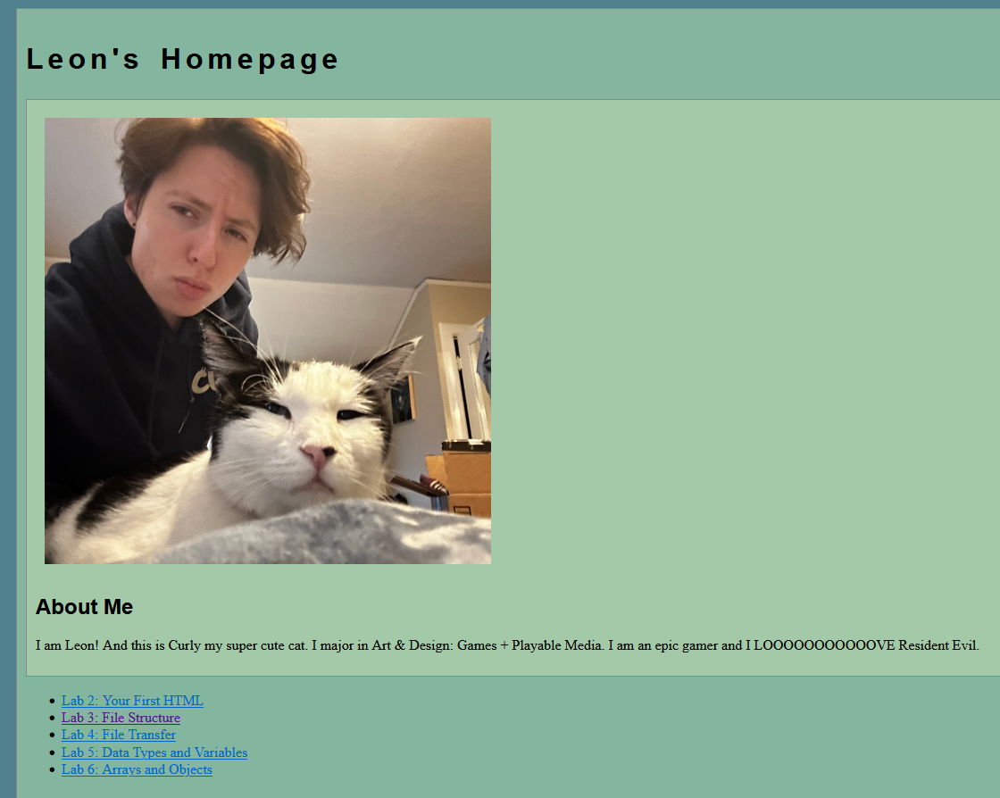
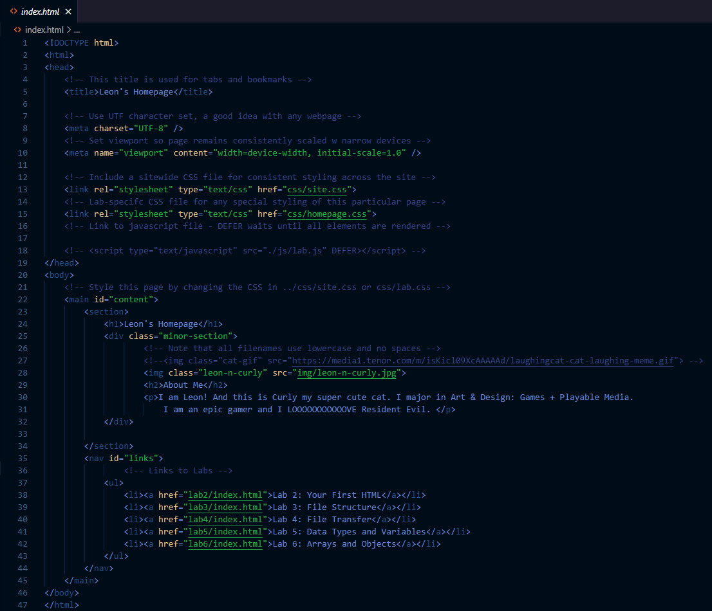

Lab 3 - File Structure and File Transfer
Challenge
Learning how to structure the repository and linking different pages to the homepage.
Problems
We did not run into many problems other than figuring out how collaborative work functions for this specific lab.
Task 1 - File Structure
Task 2
Part A
Task 2
Part B
Reflection
Leon
I am confident in my understanding of the parent and child relations of the files. I am capable of driving wonderfully. What I am not confident in is following directions, thankfully my partner Nate acted as the navigator for this lab and guided me while I updated my homepage. I was a little confused on the deliverables. Are we both expected to update our homepages and submit screenshots of them in the lab PDF? Or is it alright if one person drives and the other person navigates?
Nate
I was traveling during this assignment, and so I needed to take a hands off approach. I took the lead in terms of making sure the assignment was conducted correctly by my partner, and kept them on track. I stepped in to solve the problems we had when understanding the tasks given to us. In terms of peer programming, I was the navigator of the group. I understand that I did not physically do much work, however we both agree we put in valuable effort for this assignment.